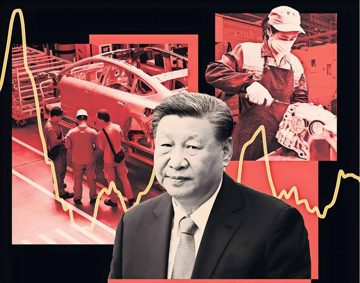
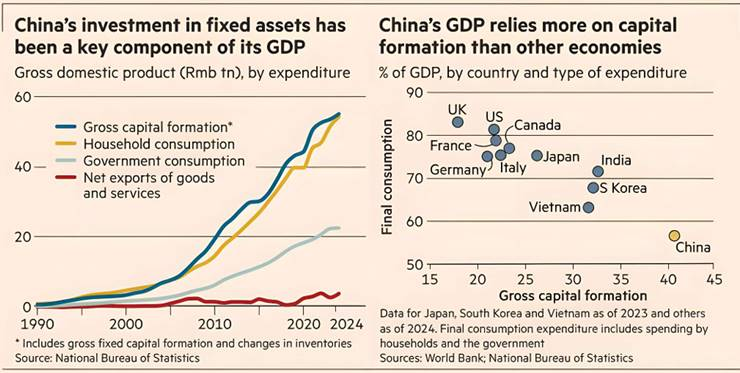

The new industrial park on the edge of Tangshan, a gritty
manufacturing city near Beijing, has lofty ambitions to attract the country’s
most advanced companies.
But so far, the mostly empty complex surrounded by lush cornfields has only
drawn a couple of auto parts producers, an ammunition case maker and a toll
collection equipment company.
But that is not deterring local officials. Turning on the lobby lights to
reveal an extensive model of the park, a man who identifies himself only as
Zhao says the aim is to draw what China’s president, Xi Jinping, calls “new
quality productive forces” such as electric vehicle and battery makers.
Tangshan, he adds, “is seeking to shift from traditional manufacturing to
high-tech industries”.
Copycat complexes are found in hundreds of lower tier cities across China. Local government officials, desperate to meet their GDP growth targets following a deep property slowdown, are driving investment into favoured industries such as EVs, artificial intelligence, robots, batteries and solar panels.
The country is becoming so saturated with such projects that Xi recently betrayed a rare note of exasperation at what Beijing calls neijuan, or involution — excessive price competition. “Artificial intelligence, computing power and new energy vehicles. Do all provinces in the country have to develop industries in these directions?” Xi told the Central Urban Work Conference, a high-level Communist Party meeting on urban development, according to state media.
Economists have long warned that China’s state-directed model of debt-fuelled investment risks the inefficient allocation of resources and the crowding out of consumption, obstructing long term growth.
Yet after its property bubble burst in 2021, China has leaned more heavily than ever on investment, manufacturing and exports as households — most of whose wealth is tied up in real estate — constrained their spending.
China’s over-dependence on manufacturing investment has taken on new urgency as excess capacity and weak domestic demand lead to one of its longest periods of deflationary pressure since the 1990s.
Overcapacity has also become a global challenge for trading partners, which worry about a repeat of the surge of Chinese exports during the late 1990s and early 2000s. The US and the EU, along with large developing countries such as Brazil and India, are rapidly erecting trade barriers to prevent their own advanced industries being subsumed by a flood of low-cost goods from China.
After previously denying the existence of overcapacity — Xi during a trip to France last year said there was no such thing — Qiushi, the Communist Party magazine, last month not only used the term but also laid out a forensic analysis of its causes. A swath of measures to try to shore up prices have followed.
But with China’s investment in manufacturing still rising at a blistering pace — up 7.5 per cent so far this year after a 9.5 per cent rise in 2024 — there is no end in sight.
Yan Se, assistant professor in the department of applied economics at the Guanghua School of Management in Peking University, said at a recent seminar that China's share of global manufacturing value-added could rise to 40 per cent in the next five years, from about 27 per cent now.
“I think it’s encouraging to see Beijing recognising this [involution] as an important issue and something that is not just a headache for China's trade partners but also poses challenges for China’s economy in its own right,” says Frederic Neumann, chief Asia economist at HSBC.
“The question is, how much can really be done in the short term?” he adds. “Because in order to alleviate the consequence of involution, you need to probably have greater investment discipline and you need greater domestic demand at the same time.”
“You need to increase demand and reduce supply. And that’s easier said than done.”
China’s President Xi Jinping has encouraged ‘new productive
forces’ such as… electric vehicles, but heavy spending is not always fuelling
growth in the manner he envisaged.
FT montage/Getty Images
Round the corner from Zhao’s complex, another new industrial park touting itself as an “advanced manufacturing technology hub” is also largely empty.
The park has sold about 75 per cent of its properties to companies that make firefighting, agricultural and other equipment, a manager says. Most have yet to move in. Many of the factories seem to be temporarily used to store construction materials.
“It might be because the economic situation in the past two years has not been very good and demand has not been high as expected when the land was purchased,” says a salesperson at the complex. “So now [the buyers] want to rent it out again.”
The empty factories point to another big problem: unproductive investment. Even though most are not yet equipped with machinery, the buildings can still be counted as fixed asset investment in manufacturing, economists say.
Tangshan is one of 40 Chinese cities sampled in a new report from Yuhan Zhang, principal economist at the China Center of the Conference Board. It found that many of China’s smaller cities were heavily dependent on such investment to produce economic growth.
Such conurbations had investment-to-GDP ratios on average of 58 per cent last year, compared to China’s already high national average of 40 per cent.
“Even with considerable excess capacity, local governments are ramping up industrial and infrastructure investments to counteract weakness in the property market,” Zhang said.
The study also found that in lower tier cities, high investment intensity usually coincided with weak labour productivity and lower total factor productivity — a measure of output per input of capital and labour. For policymakers in Beijing, the original idea of new quality productive forces was not only to move Chinese industry up the value chain, but also to improve total factor productivity.
“Misallocated investment and duplicated capacity are undermining efficiency,” Zhang wrote in the report, flagging that “long-term gains… require human capital development, innovation, and more market-oriented resource allocation.”
Top-tier cities such as Beijing, Shanghai, Guangzhou and Shenzhen “have transitioned to economies centred on knowledge-intensive industries, advanced services and global trade.”
“Heavy fixed-asset spending appears to reduce efficiency rather than boost it, even if local governments are pouring money into ‘new quality productive forces,’” Zhang concluded.
On the floors of China’s producing factories, life is already a daily battle for survival against razor-thin or even negative margins, as demand contracts and exports face tariff uncertainty.
Zhao Fen owns four toy factories, which produce original merchandise and toys under licence from other brands. Chain-smoking in her office in China’s southern industrial province of Guangdong, where she is surrounded by Winnie-the-Pooh toys and anime figurines, she says the biggest change in her business over the past decade was the rise of juan — excessive competition — which has reduced the selling prices of her goods by about half in that time.
Even in these more traditional sectors, competition has been partly driven by the ideas behind new quality productive forces, which include upgrading China’s older industries with new equipment, academics say.
Beijing has been running subsidy programmes for producers to buy new machinery, supercharging production at a time when there is less consumer demand.
“In the past, good things needed people to make them, but now they are made by machines, and the overall production capacity has also increased, so the unit price has also decreased,” Zhao complains.
The industry is now so crowded with producers that profits have become elusive.
“Making money is just the icing on the cake,” Zhao muses, adding that her factories sometimes accept unprofitable orders just to ensure that they can retain their workforce.
She also complains about IP theft, echoing long-standing complaints from western manufacturers. “The market is too good at copying... it’s not that the control and prevention of copying in IP products is not strict in China... but there are many people who take advantage of loopholes.”
“It is because of this that the entire industry has been squeezed to the point that no one has any profits... Unless we are all consolidated into one group... I think it is very difficult for the country to control this. There is no way to control it.”
“If we don't build a social welfare society… then deflationary pressures will be structural. This rat race will be long-term.”
Similar situations confront producers higher up the value chain. At the China International Supply Chain Expo in Beijing this month, Li Congjun, salesman manager at Expo New Materials, said traditional plastics products were facing “significant price pressure.”
Companies tried to develop new products but innovation often needed support from government policies to get off the ground. “In practice, policies often seem like ‘loud thunder but little rain’ — the actual support isn’t very strong,” said Li, whose Wenzhou-based group makes engineering plastics.
A government trade-in programme for consumers, in effect a subsidy to buy products, had helped but the market “is still not as robust as during the era of real estate prosperity, four to six years ago,” Li said.
One manager at Jiangxi Jinghang Aviation Forging & Casting, a state-owned enterprise affiliated with China's aerospace company Avic, said at the event that his firm had tried diversifying into automotive work, “but this industry became too competitive, with more and more participants and almost no profit, so we abandoned this sector.”
Today, the company was trying to generate more foreign sales, with its eye on European aircraft maker Airbus as a potential customer.
Excess capacity and over-competition are not new phenomena in China, which has experienced bouts of neijuan during the 1997-98 Asian financial crisis, the 2009 global financial crisis, and between 2012 and 2016, due to the stimulus-driven over-investment that followed the financial crisis. During that last bout China embarked on “supply side reforms”, shutting down or consolidating capacity in steel, cement and other sectors.
Mirroring that last effort, the government has again begun intervening in some industries. The State Administration for Market Regulation (SAMR), China’s competition regulator, in July ordered internet shopping platforms Ele.me, Meituan and JD.com to participate in competition “rationally” — the second such warning in two months.
Similar government guidance has been provided to the solar and car industries while the Ministry of Industry and Information Technology has said it will soon release a plan to stabilise growth in 10 key industries, including steel, non-ferrous metals, petrochemicals and building materials.
On July 24, SAMR and the powerful National Development Reform Commission went further, unveiling a draft amendment to the country’s price law that would ban companies selling below cost and stopping them from using data and technology for improper pricing practices.
However, academics say it was easier for the government to reduce overcapacity when it was concentrated in sectors full of state-controlled enterprises.
“Now we have oversupply pressure in very advanced investment, including EVs and batteries and solar panels and soon,” says Tang Yao, an associate professor of applied economics at Guanghua School of Management.
“This time around, these companies are mostly private... we will have to rely on a market approach.”
He adds the government has already said it wants to improve “fair competition” — code for removing subsidies and tax rebates, especially at the local level, and building what Beijing calls a “unified national market.” This would constrain local administrations from competing with each other by differentiating themselves using special subsidies and protection for favoured companies in their jurisdictions.
Beijing “understands that in order to reduce the involution-style competition of the nation, first you have to control the behaviour of local governments,” Tang says. If subsidies were limited, then uncompetitive companies might naturally exit the market.
Yan, also of Peking University, says ultimately, Beijing needs to address China's thorniest problem: how to rebalance the economy towards higher domestic demand.
One big obstacle to that is the need to provide sufficient social welfare, unemployment and retraining benefits to help existing workers make the transition from traditional sectors to more sophisticated work. Without this, local governments will be reluctant to shut down older or loss-making factories for fear of job losses that threaten social stability and GDP growth.
“So if we don't build a social welfare society, if we don’t provide people with better benefits, deflationary pressures will be long term and structural. This rat-race will be long-term,” Yan says.
But while these themes are debated in Beijing, in regional cities such as Tangshan local officials remain as determined as ever to move up the value chain into the hottest sectors.
Last year, 71 new robot manufacturing companies set up in one of Tangshan’s high-tech zones, local state media reported, bringing the total to 238 as of March 2025. Robots, particularly those powered by AI, are another of Beijing’s top priorities for development.
Zhao, at the first industrial park, says that while local authorities would drop subsidies according to the central government’s wishes, they could still help companies setting up in the region with funding from local government finance vehicles, particularly for “high-end projects impactful to the local economy.”
“We fully support national policy,” the official says. “We no longer support industries like steel and coal-mining.”
Data visualisation by Haohsiang Ko